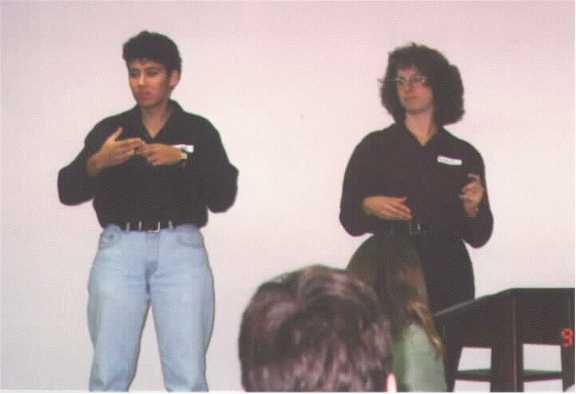

Gadamer6

Image credit: 1
A working interpreter is in a strange position during a speech act. Being neither speaker nor audience, one must produce in the target language (the language an utterance is being interpreted into) what seems like the interpreter's own idea. Not only must there be some prediction as to where the message is going, but there needs to be some idea as to "where the message came from", that is the speaker's attitude, goals, mood, audience assessment, expertise, and so on. Often all the interpreter has to work with is the source language and some cursory discussion with the speaker before the speech act. Perhaps the setting (church, school, doctor's office) can offer some clues as to what might be discussed. But an untrained listener does not need to make such assessments.
Average listeners have their own agendas. They may hang on the speaker's every word, listen with contempt, plan their shopping lists, or listen cautiously. These side agendas act as noise that keep them from capturing the message in an unmediated way. Indeed, we usually do not wish to do so, but only wonder "what's in it for me?" Interpreters hope to remain neutral in their assessment so that the true colors will show through and allow the receiver (I will try to avoid language that implies the language is spoken rather than signed) to do with the message as they will. We can not look at a message in a totally neutral way, but must "stand somewhere" like the tale of the blind men who approach an elephant and each feel a different part of its body, drawing different conclusions due to their different locations . One can not make meaning without comparing what is experienced to previous experiences.
I believe that hermeneutics can offer some help to interpreters in their quest to deal with how their own experiences color their interpretations, which Gadamer in particular has called "prejudice" when it happens to the average listener, and when it intrudes into the interpreting process I shall call it prejudicial intrusion, compromising the receiver's full access to the original message. First I would like to offer a historical perspective on hermeneutics and the eventual evolution of psychological interpretation and prejudice. The term "hermeneutics" did not appear often in antiquity.1 Aristotle uses it in his paper On Interpretation (Peri Hermeneias) which speaks of "the grammatical structure by which subject and predicate are united in human speech to reveal the character of things" (Mueller-Vollmer, 1997, p. 1).
Aristotle2
Aristotle's approach to interpretation is essentially a logical one and by interpretation he means what later would be called grammatical interpretation. He sees the spoken word as primary in terms of how language is used. "Words spoken are symbols or signs of affections or impressions of the soul; written words are the signs of words spoken" (Aristotle, v. 1, 1965, p. 115). Aristotle became inadvertently the Father of audism (belief in the superiority of spoken language and the "hearing" mind over sign language and Deaf culture) through what I believe is a mistranslation of his thought. Since words are to the thoughts of the soul as written words are to those spoken, it would seem reasonable to assume that if someone could have explained the principles of sign language to Aristotle he could have envisioned an equality of spoken and signed language, once a person's mind was properly educated through whatever modality was needed. Benderly comments (1980, p. 107):
The expression "signs of affections or impressions of the soul" sounds promising, but psychological interpretation is not considered in Aristotle's work. Keeping our eye on the fact that we are investigating prejudice, there is no need for such a concept yet in such a framework. Individuality is seen perhaps in people's character and moods, but it is a superficial difference. In fact, he goes on to say that writing and speech are "not the same for all races of men. But the mental affections themselves, of which the words are primarily signs, are the same for the whole of mankind" (ibid.).
Seleskovitch (1978) tried to break interpretation away from a grammatical model where words came in and other words came out, as in the stenographic model mentioned at the opening of the paper. She does not use the term psychological interpretation, but her thrust is "semantic equivalence". Her book Interpreting for international conferences is aimed at conference interpreters, but of course applies to all those whose goal is a successful interpretation. The conference delegate, she relates, believes when he speaks in his native language that his words are coded into the interpreter's target language "just as it would be taken down in shorthand or put into Morse code. . . [and] that the meaning of the message is of no concern to the interpreter, since the interpreter deals solely with the form of the message" (loc. cit., pp. 4-5).
Seleskovitch (loc. cit., pp. 5-6) constructs a thought-experiment where a mediator passes a message from one speaker to the other by shuttling between two sides of a glass wall that allows the two speakers (who share the same language) to see but not hear one another. Obviously the messenger would not run back and forth after every word, which would be disruptive to each of the speaker's thought processes, but would wait until a meaningful unit had been articulated, perhaps about three minutes and then convey it to the other side. The average person speaks at a rate of 150 words per minute, which means that after a three-minute period, the messenger must convey a text of 450 words. Would the messenger endeavor to memorize a text of that length? Certainly not. Instead, the meaning of the text would be rephrased in some manner, hopefully without deleting from, adding to, or skewing the original thought.
A better analogy, she continues, would be to compare an interpreter to a sportscaster at a soccer match. The plays on the field are translated from one form of expression (the action of the players on the field) to another (the play-by- play verbalization of that action). To the extent that a listener can envision what has happened on the field, as least in regard to its salient features, the interpreter/broadcaster has delivered a text that is semantically equivalent. In a similar way, one might think of a person's speech acts as being the translation of some mental picture (it need not be visual), something that is distinctly not language, into a string of words. The interpreter's job is to utter a string of words (or articulate a signed text) that will engender in the listener a similar visualization as that of the source. An interpreter does not remember the form of what was uttered, nor does a listener who understood the source language. Instead, what is left is "the meaning, clear and precise because it was spoken aloud, but already largely amorphous in memory" (loc. cit., p. 16).
Aristotle does recognize that there is some mediating process whereby thoughts are transformed into words, for words are not identical to thoughts, even allowing for the differences in languages: "A noun or verb much resembles [my emphasis] a concept or thought. . ." (1965, p. 117). His focus in this work is on propositions which can have a truth value, which further disallows the psychological. "A prayer is, for instance, a sentence but neither has truth nor has falsity. Let us pass over all such, as their study more properly belongs to the province of rhetoric or poetry" (loc. cit., p. 121). This led me to hope that what I sought might be in Aristotle's "Art" of the rhetoric.
John Henry Freese, in the introduction to his translation of The "art" of rhetoric, characterizes it as follows:
Interpretation continued after this manner, as in the school of Alexandria, and later became part of the theological culture of the Middle Ages. Rhetoric had been highly esteemed in Classical Greece and thus the spoken word and it's interpretation were highly prized. As the Church took hold, emphasis went to the written Word, that is, the Bible. Barrett (1996) tries to demonstrate that the Church Fathers had a notion of cultural science (Geisteswissenschafte). He states that the Church became hermeneutic in order to defend its doctrines against the criticism of other philosophies. This banner was taken up by Tertullian, Clement of Alexandria, Origen, Basil, Gregory of Nazianus, Gregory of Nyssa, and above all, by Augustine. "Initially at least they were hermeneutic. They had no intention of attempting to explain or prove (erklaeren). Their aim was to make as intelligible as possible the mysteries of faith (Verstehen)" (1996, p. 223).
St. Anselm3
Although it would seem obvious that some knowledge of history and therefore historical interpretation would be beneficial, the Church relied more on the attitude of one such as St. Anselm, who said, "For I do not seek to understand in order to believe but I believe in order to understand" [Proslogion, ed. and tr. J. Hopkins and H. Richardson (London, 1974) in Anselm of Canterbury, vol. 1, p.93, quoted by Barrett (1996, p. 224)]. The message of Jesus was delivered to men who themselves did not fully understand it, but through their faith they were vehicles to proclaim the Gospel, whereby the Church through Jesus' institution of the Apostolic Succession was able to help all people come to a refined sense of its meaning.
It was not until the Renaissance that hermeneutics become a discipline of its own. Three things outside the Church led to an increased interest in interpretation: (1) When some believed that they could no longer turn to the church for guidance, they returned to the Classics of Greece and Rome for inspiration. Scholars worked to develop an Ars Critica, which might be termed a historical interpretation, whereby a text might be authenticated and corrected for any errors in historical transmission. Translation was often subsumed under the category of interpretation. (2) An interest in Roman law lead to an interest in principally grammatical interpretation of ancient texts to serve the needs of jurisprudence. (3) Enlightenment philosophers, who wished to systematize all human knowledge used a hermeneutic approach to outline rules that might help them do so. They returned to Aristotle's grammatical approach to hermeneutics, being a topic within logic. Now hermeneutics was becoming an independent discipline with trained specialists, not merely a means to an end.
Luther4
The Reformation advanced the idea of perspicuity, whereby any one was entitled to interpret the scriptures under the guidance of the Holy Spirit. Luther commented,
Schleiermacher5
Schleiermacher wanted hermeneutics to be expanded to a more general understanding of texts and not a specialized one, such as had existed heretofore in philology and theology, in both of which he was expert. "To seek understanding without reflection and to resort to the rules of understanding only in special cases is an unbalanced operation" (Schleiermacher, Hermeneutics and criticism, in Mueller-Vollmer, p.73). Hermeneutics does not only deal with texts written in a foreign language. It is assumed that the reader is familiar with the language and contents. Furthermore, spoken "texts" are also worthy of such analysis. For Aristotle, hermeneutics was a branch of logic, and rhetoric was to be applied concerning things that that were not capable of strict proof and required some appeal to the emotions. For Schleiermacher,
Psychological interpretation now comes to the fore. Not only does a presenter or writer have a mind-set that must be sought beyond the mere grammatical, but such a one is in a constant state of development: "he is a person who is a constantly developing spirit, and his speaking can be understood as only one moment in this development in relation to all others" (loc. cit., p. 75). For interpreters, this means that as they take in the source language, they must be building in their minds a picture of who this person is beyond the "text" they utter as a foundation for understanding the text at hand.
Grammatical and psychological interpretation are constantly in operation and neither is higher than the other. One or the other will come to the foreground at different times. The interpretative act requires linguistic competence and a grasp of the psychology of people. Some passages will give an interpreter pause (I now use this term for the audience Schleiermacher was aiming at as well as my audience of working interpreters), whereas others will allow for an unimpeded journey. A statement is
Another consideration is the intended audience. I would not speak identically to the immature as to the mature, to the knowledgeable as to the naive, to the experienced as to the amateur, vis a vis a given topic. In reference to the New Testament, Schleiermacher comments,
An interpreter is in much the same position as a reader who wishes to use the hermeneutic method in so far as one can not ask the author the meaning of what is said. We interpreters may occasionally ask for a repetition of something we did not hear, but it would be too obtrusive to ask a presenter for a clarification of what they meant, unless it is a one-on-one meeting.
Schleiermacher's answer is that "the more we learn about the author, the better equipped we are for interpretation" and "that a text can never be understood right away. . . every reading puts us in a better position to understand" (loc. cit., p. 84). For the working interpreter, who can not listen to a real-time assignment repeatedly, this means two things: (1) preparation before an assignment becomes increasingly necessary in proportion to the projected psychological/historical content of the text, and (2) processing time (a lag between the time when the message is generated and when an interpretation is rendered for purposes of analyzing the message) must be lengthened in the same proportion. Psychological/historical content increases as the presenter’s individual perspective, content knowledge, and culture diverges from that of the interpreter. Schleiermacher later calls this the presenter’s "sphere" (loc. cit., p. 87). This is why there is an advantage to matching an interpreter with the sphere of a given presenter. For those who are not so matched, preparation is in order.
"The meaning of each word of a passage must be determined by the context in which it occurs" (Mueller-Vollmer, p. 90). It is also the purview of the interpreter to assess the audience, to help predict the form and function of the text and how it can best be structured to fit the needs of the receivers, be they hearing people listening to a Deaf speaker, or deaf people listening to a hearing speaker. Just as one who translates an ancient text must decide how annotative to be.
It is necessary to determine the goal of an author/speaker: "grammatical interpretation cannot grasp how the work [text] is a necessary undertaking of the author, since a sense for this necessity emerges only if the genesis of the text is never lost from view" (Mueller-Vollmer, p 94-95). It is wise for an interpreter to ask the speaker what his goal is. This is sometimes phrased: "If there is one thing that the audience comes away with after this talk, what would you hope it to be?"
We have not seen in Schleiermacher a concept of prejudice, although it is clear that if psychological interpretation is sometimes necessary, that it will require us to take on a mind-set that is often not our own, which is in itself quite an undertaking, like that of an actor in search of his Stanislavskian motivation. A later scriptural exegete, Bultmann, makes this potential difficulty more manifest in his concept of "presupposition":
So goes the evolution of the Protestant branch of exegesis. The Catholic view would see an unfolding via Newman's quoted remark, the Reformation age Protestant thinkers believed in perspecuity within the confines of received dogma, and Bultmann wishes only a consideration of the dogma that can be gleaned from the text itself, without presuppositions. Exegesis should not reflect the individuality of the exegete, but must follow the historical method. Since "every text speaks in the language of its time and of its historical setting", the exegete must become familiar with "apocalypticism, the rabbinic literature, and the Qumran texts, as well as the history of Hellenistic religion" (loc. cit., p. 243). In this manner, Gunkel (1888) found that although pneuma meant "spirit" in Attic Greek, it meant G-d's miraculous power and manner of action in New Testament times.
Bultmann rejects miracles because in so far as we need to use the historical method to reconstruct NT meaning, "the continuum of historical happenings cannot be rent by the interference of supernatural, transcendent powers" (loc. cit., p. 244). Now every historian uses different forces to connect the individual historical phenomena: economic needs, social exigencies, the political struggle for power, and so on. This difference in perspective "does not mean a falsification of the historical picture, provided that the perspective that is presupposed is not a prejudice, but a way of raising questions." (ibid.)
This idea of demythologization seems inconsistent in the sense that here we have, in the interest of understanding the text, already rejected a strong belief of the period which must have informed the text, namely that history can and has been interrupted by G-d for his own purposes, i.e., miracles. Again, my interest is in the development of the concept of prejudice, so let us forge ahead. Not being comfortable with calling the presuppositions that exegetes or historians have in their examination of previous periods "prejudice", he terms this a "preunderstanding" (loc. cit., p. 245) if we have a "life-relation" to the text, whereby he means, "the subject matter with which the text is concerned also concerns us and is a problem for us" (ibid.).
We must participate in our understanding of the Holy Text with our whole existence, so that the phenomena of history speak to us in our present situation. In this way, "the understanding of the text is never a definitive one; but rather remains open because the meaning of the Scriptures discloses itself anew in every future" (loc. cit., p. 247). The secular historian also never has a definitive account of history because "The seemingly objective picture of historical processes is always stamped with the personality of the observer, who is himself historical and can never be a spectator standing outside of historical time" ("The problem of demythologizing" in Mueller-Vollmer, 1997).
Gadamer6
Hans-Georg Gadamer has written about the concept of prejudice as a material part of his Truth and Method. This is tied to his treatment of Erlebnis (an experience). He reports that although the word erleben (to experience) had a lengthy history in comparison, Erlebnis became common only in the 1870s (1975, p. 55).3 The word has a sense "to be still alive when something happens"4 and so has "a note of the immediacy with which something real is grasped. . . ; [w]hat is experienced is always what one has experienced oneself" (ibid.). It is in this period (the 1870s) that biographies of great thinkers were written in order that they might be understood through their "experiences". The industrial revolution mechanized society and left its artists hungering for direct experience. Here we find psychological interpretation, where an artist's or poet's work is to be understood through an understanding of their life (experiences).
Gadamer later speaks of how Heidegger took up Schleiermacher's concern that a person understand a text without projecting one's self into the text. "All correct interpretation must be on guard against arbitrary fancies and the limitations imposed by imperceptible habits of thought and direct its gaze 'on the things themselves'" (loc. cit., p. 236). The way to discover that there is a difference between our own customary usage and that of the text, is to be "pulled up short by the text". We must remain open to the meaning of the other person or of the text.
"Prejudice" did not have its negative tinge until the Enlightenment, he continues. In German legal terminology, "prejudice (Vorurteil)" means a provisional legal verdict before the final verdict is reached. In English, lawyers speak of a finding to be given "without prejudice". In a similar way, an interpreter can use one's prejudice as part of the hermeneutic circle, whereby one takes in the message and utilizes a fore-understanding until such time as one is "pulled up short" and revises one's interpretation to fit the newly revealed, apparent sense of the text. This continues throughout an interpretation. To understand primarily means for two people to understand one another. People dialogue until they reach agreement. "Understanding becomes a special task only when this natural life in which each means and understand the same thing, is disturbed" (loc. cit., p. 158).
To review the ways that modern hermeneutics could minimize prejudicial intrusion: (1) transcend the grammatical (beyond Aristotelian hermeneutics), (2) don't use a canonical framework (beyond Scriptural hermeneutics), (3) grammatical and psychological interpretation are constantly in operation (Schleiermacher's balanced process), (4) assess your audience (in parallel with a historical understanding of those to whom the Scriptures were written), (5) become the speaker to the extent it is possible by analyzing and making explicit in your mind what may only be implicitly stated by the speaker ("understand the text at first as well as and then even better than the author"), (6) prepare for the assignment through research, continual content learning, and on-the-spot awareness as one uses one's processing time well ("the more we learn about the author, the better equipped we are for interpretation"), (7) use contextual clues such as setting, introductory remarks, and where one is in the proposed structure of the talk to flesh out the meaning ("The meaning of each word of a passage must be determined by the context in which it occurs"), (8) determine the speaker's goal and perspective ("the genesis of the text [must] never [be] lost from view", and (9) don't try to be neutral or extinguish yourself, but become aware of your prejudice "so that the text may present itself in all its newness and thus be able to assert its own truth against one's own fore-meanings" (the quotes are from Gadamer).
Hermeneutics is a discipline whose perspective on (mentally) interpreting spoken languages can tie together many disjointed themes in the field of real-time spoken and sign language interpretation. Just examining one aspect, albeit a large stumbling block, shows how many things the working interpreter must be mindful of. No wonder Seleskovitch has said that interpreters must "have an inborn curiosity and must have the ability to take an interest in each and every area of human activity. Lastly interpretation requires that one have nerves of steel, great self-control and acute and sustained powers of concentration" (1978, p. vi).
 Aristotle. (1965-79). Aristotle in twenty-three volumes. With An English translation by Harold P. Cooke [et Al.] Cambridge, Mass. : Harvard University Press ; London : W. Heinemann.
Barrett, C. (1996). Believing in order to understand. In A. O'Hear (Ed.), Verstehen and humane understanding. (pp. 223-233). Cambridge, UK; New York, NY; Melbournbe, Australia: Cambridge University Press. ISBN: 0521587425.
Benderly, B. (1980). Dancing without music: Deafness in America. Garden City, NY: Anchor Press/Doubleday.
Gadamer, H. (1975). Truth and method. Translated by Sheed and Ward Ltd. New York: Seabury Press.
Luther, M. (1537). The Smalcald articles. Cited in full by C. Conrad (1999, Feb 17). [Online ]. Available: The Smalcald articles. [1999, April 28].
Metzger, M. Sign Language interpreting: Deconstructing the myth of neutrality. ISBN 1-56368-074-2. To read an excerpt, see "Neutrality in translation and interpretation".
Mindess, A., T. K. Holcomb, D. Langholtz, and P. Moyers. (1999, July).
Reading between the signs: Intercultural communication for Sign Language interpreters. Intercultural Press. ISBN: 1877864730.
Mueller-Vollmer, K. (Ed.), (1997). The hermeneutics reader. New York: Continuum.
Seleskovitch, D. (1978). Interpreting for international conferences. Translated by S. Dailey and E. McMillan. Washington, D.C.: Pen and Booth.
Simpson, J. and E. Weiner (Eds.), (1989). The Oxford English Dictionary (2nd Ed., Vol. V). Oxford: Clarendon Press.
Aristotle. (1965-79). Aristotle in twenty-three volumes. With An English translation by Harold P. Cooke [et Al.] Cambridge, Mass. : Harvard University Press ; London : W. Heinemann.
Barrett, C. (1996). Believing in order to understand. In A. O'Hear (Ed.), Verstehen and humane understanding. (pp. 223-233). Cambridge, UK; New York, NY; Melbournbe, Australia: Cambridge University Press. ISBN: 0521587425.
Benderly, B. (1980). Dancing without music: Deafness in America. Garden City, NY: Anchor Press/Doubleday.
Gadamer, H. (1975). Truth and method. Translated by Sheed and Ward Ltd. New York: Seabury Press.
Luther, M. (1537). The Smalcald articles. Cited in full by C. Conrad (1999, Feb 17). [Online ]. Available: The Smalcald articles. [1999, April 28].
Metzger, M. Sign Language interpreting: Deconstructing the myth of neutrality. ISBN 1-56368-074-2. To read an excerpt, see "Neutrality in translation and interpretation".
Mindess, A., T. K. Holcomb, D. Langholtz, and P. Moyers. (1999, July).
Reading between the signs: Intercultural communication for Sign Language interpreters. Intercultural Press. ISBN: 1877864730.
Mueller-Vollmer, K. (Ed.), (1997). The hermeneutics reader. New York: Continuum.
Seleskovitch, D. (1978). Interpreting for international conferences. Translated by S. Dailey and E. McMillan. Washington, D.C.: Pen and Booth.
Simpson, J. and E. Weiner (Eds.), (1989). The Oxford English Dictionary (2nd Ed., Vol. V). Oxford: Clarendon Press.